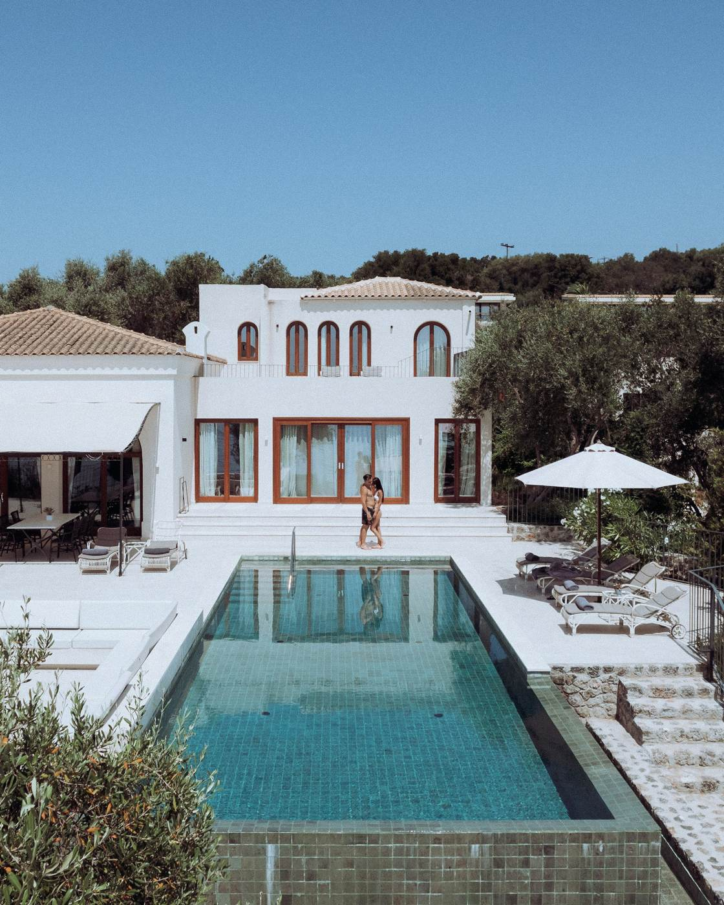
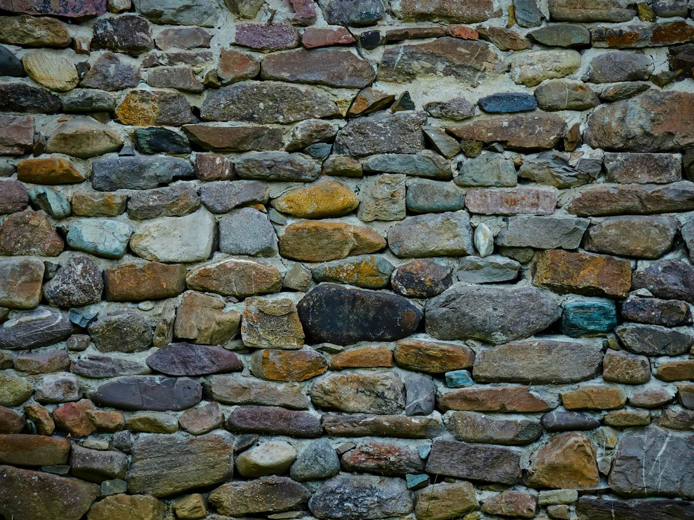
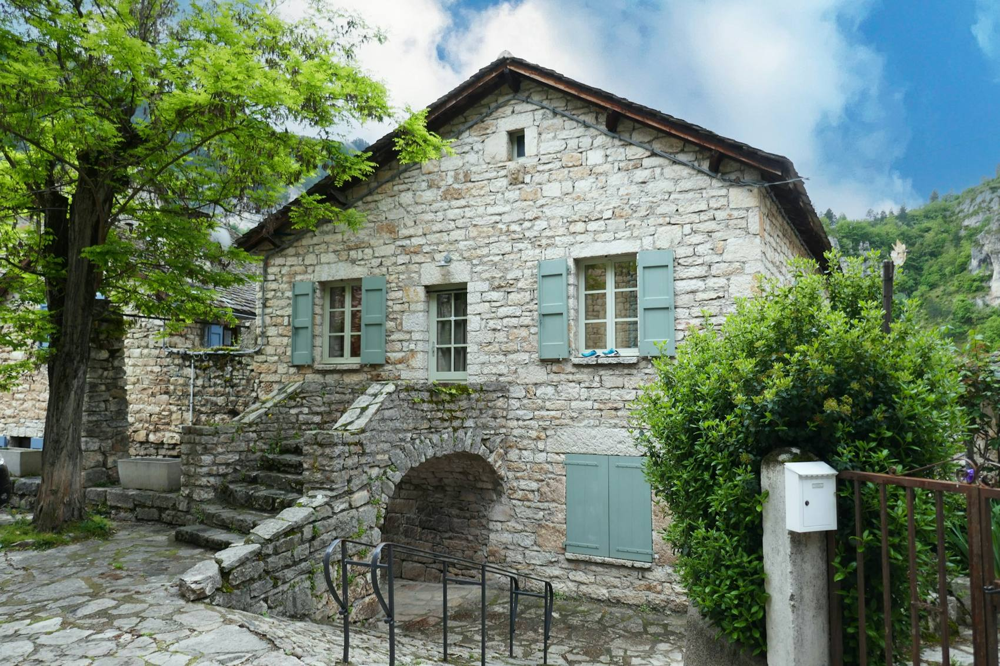
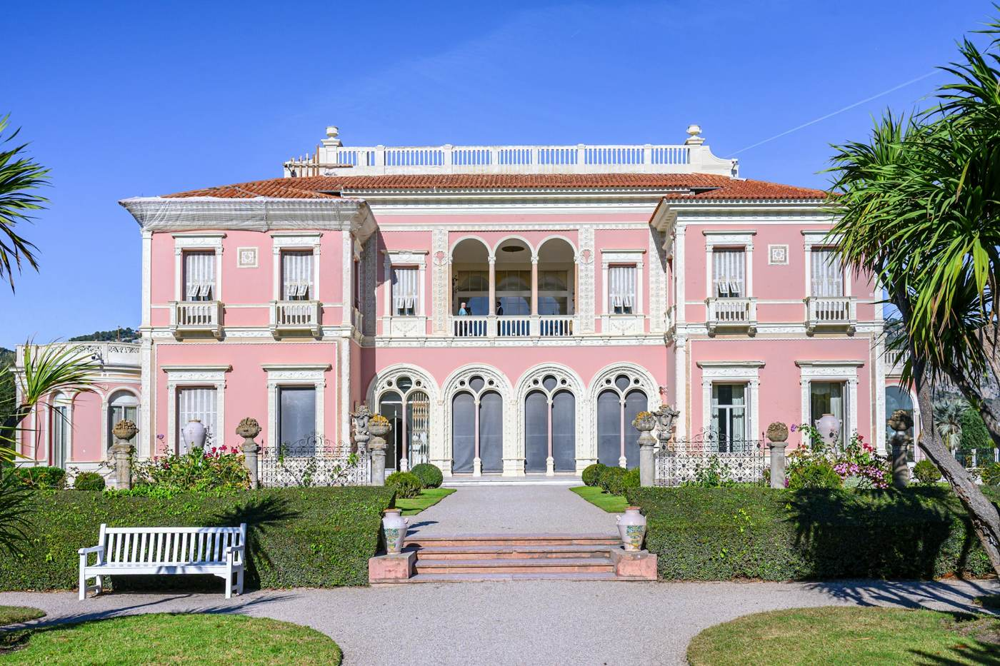

Exemple fictif
Exemple fictifUn sol en terre cuite
Dépose de l'ancien sol, chape reprise et pose de carreaux en terre cuite, joints au ton de la pierre.

Réalisations
Chaque chantier avec sa commune, sa date et le type de travaux.
Maquette : ces chantiers sont des exemples fictifs. Ils seront remplacés par vos vrais chantiers et vos photos.
Exemple fictifDépose de l'ancien sol, chape reprise et pose de carreaux en terre cuite, joints au ton de la pierre.

Exemple fictifPlages et margelles en pierre claire, posées autour d'un bassin face aux collines.

Exemple fictifPierres de la région, chaînage discret et couronnement soigné.

Avant, après
Ici s'afficheront vos photos avant et après travaux, chantier par chantier.
Votre chantier
Nous venons voir les lieux et écoutons votre projet.
Diagnostic, conseil et estimation financière, gratuits.
Des travaux soignés, dans le respect des délais.
Un chantier rendu propre, et un artisan qui reste joignable.

Zone d'intervention
GrasseMouans-SartouxPeymeinadeCabrisValbonneMouginsCannesAntibesNiceMandelieuSaint-RaphaëlFréjusMonaco
Un projet ?
Du lundi au vendredi de 8 h à 17 h, le samedi matin.